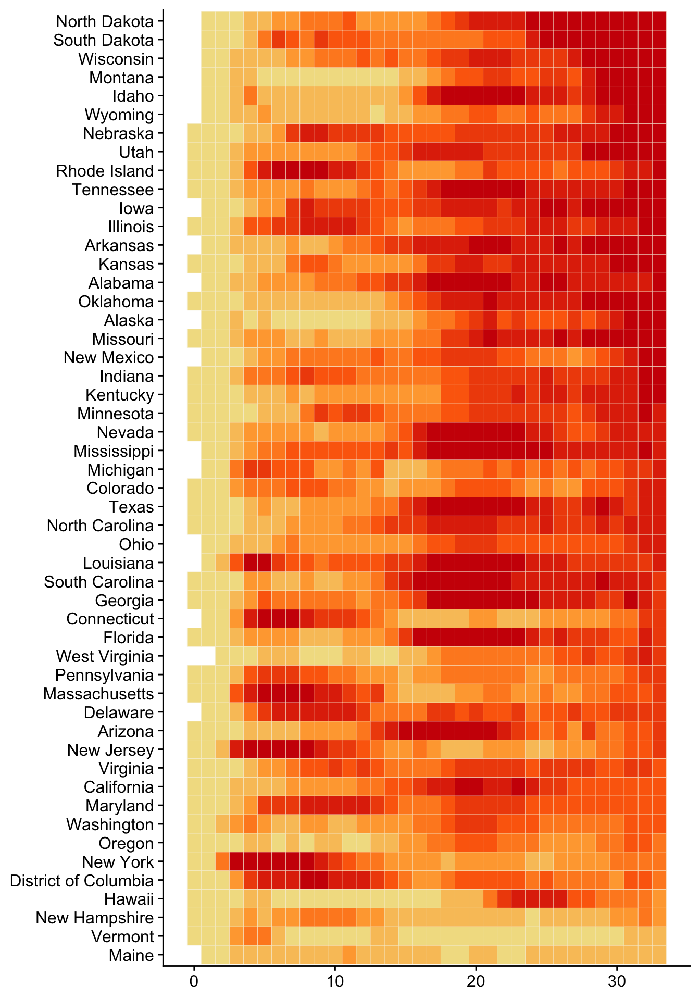
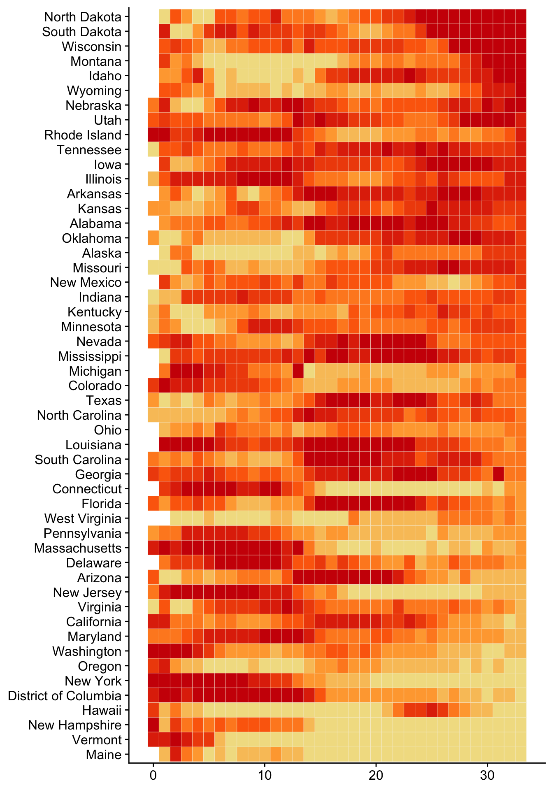

NYT heatmap
Heat relative to sample

Heat relative to week

State groups
Group definitions
Based on NYT groups (October 24, 2020):
Where new cases are higher and staying high
- North Dakota
- South Dakota
- Wisconsin
- Montana
- Idaho
- Wyoming
- Utah
- Nebraska
- Iowa
- Tennessee
- Illinois
- Alaska
- Oklahoma
- Rhode Island
- Arkansas
- New Mexico
- Indiana
- Missouri
- Minnesota
- Kentucky
- Kansas
- Alabama
- Mississippi
- Nevada
- Michigan
- Colorado
- Texas
- North Carolina
- Ohio
- South Carolina
- Florida
- Georgia
- West Virginia
Where new cases are lower and going up
- New Jersey
- Massachusetts
- Pennsylvania
- Connecticut
- Arizona
- California
- Washington
- New Hampshire
- Vermont
Where new cases are lower and staying low
- Louisiana
- Delaware
- Virginia
- Maryland
- Oregon
- New York
- Washington D.C.
- Hawaii
- Maine
State groups by urban/rural
By 2020 vote
Based on popular vote estimates from AP, November 9, 2020.